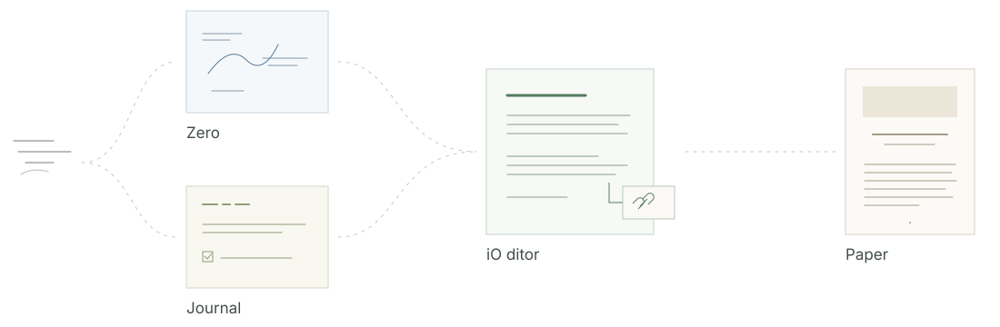

Spatial writing
Zero
Place text and drawings freely on a page. Give a thought its own form.
ExploreiO
Independent local-first applications built around ordinary files.

Spatial writing
Place text and drawings freely on a page. Give a thought its own form.
ExploreDocuments and ideas
Write, read sources and connect ideas in a local workspace.
ExploreDaily notes and tasks
Keep notes and plans in the chronology of your day. Notice what you have accomplished.
ExplorePublishing and layout
Turn Markdown into books, articles and documentation. Design pages and export a publication.
Explore